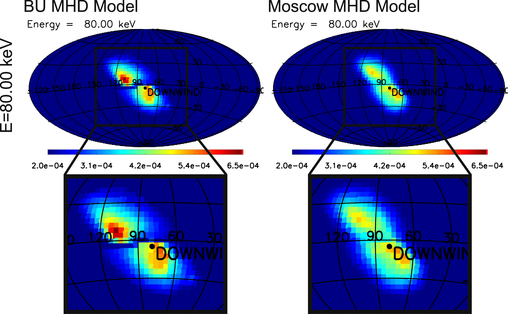

Global structure of the heliosphere
Modeling how the solar wind and the interstellar medium shape the bubble around the solar system
Research Scientist · Boston University
I model energetic neutral atoms and compare with observations to work out the heliosphere's shape and how particles are energized inside it. I direct the Global Heliosphere Team (RT1) at the SHIELD DRIVE Center.
About
I am a research scientist in the Center for Space Physics, which is housed in the Department of Astronomy at Boston University and director of the Global Heliosphere Team, the first research thrust of the SHIELD DRIVE Center.
My focus is on energetic neutral atom modeling and global magnetohydrodynamic modeling of the heliosphere to understand the heliosphere's structure and the energization processes within it.
Away from the desk. I grew up in Cherry Hill, NJ, outside Philadelphia. You will find me at BU hockey and basketball games, watching the Eagles, trying Boston restaurants, and stocking up on Philly staples whenever I am near a Wawa.
Research
The heliosphere forms where the solar wind meets the interstellar medium, and it filters high-energy particles before they reach the solar system. Only the Voyager spacecraft have sampled it directly, so much of what we know has to be inferred.
Modeling how the solar wind and the interstellar medium shape the bubble around the solar system
ENA maps from IBEX let us see the heliosphere from afar. I simulate ENA maps from heliosphere models and compare them with the observations. My ENA code is on GitHub.
The classic picture is a quiet, comet-like tail. Opher et al. (2015) proposed a shorter tail with two turbulent lobes, confined by the solar magnetic field. I test that confinement with ENA simulations (Kornbleuth et al. 2018, 2020).
Comparing simulations of short and long tails (Kornbleuth et al. 2021a, 2021b) shows that previous observations cannot settle the question, so I am investigating new approaches. These include future IMAP observations (Kornbleuth et al. 2023) and potential magnetic reconnection occurring in the heliotail (Kornbleuth et al. 2026).

At the Harvard-Smithsonian Center for Astrophysics, I studied the X-ray background in Chandra observations and compared it with solar wind data and models.
As a BU undergraduate, I compared wind mass loss rates for the Sun and an M dwarf using the Space Weather Modeling Framework, with Alfvén wave damping and semi-empirical thermal heating models.
Publications
Press